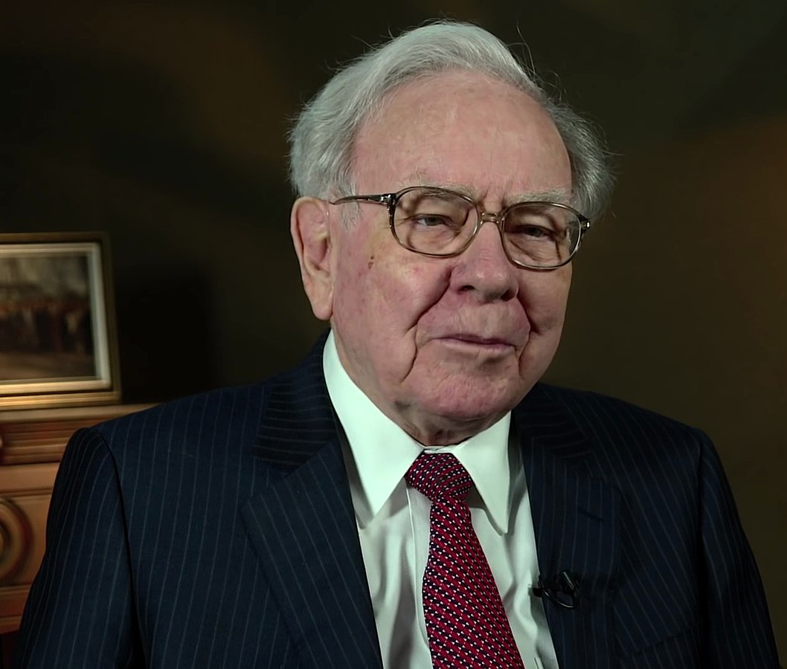
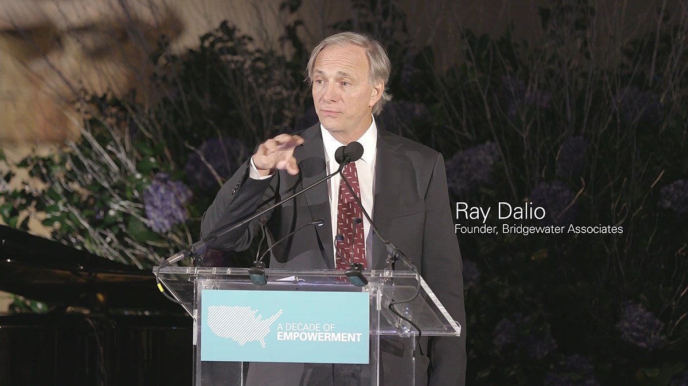
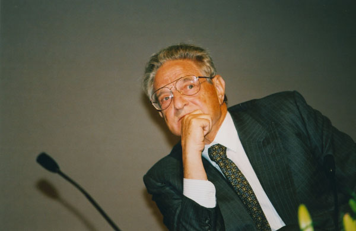

Warren Buffett, surnommé l'Oracle d'Omaha, est l'un des investisseurs les plus respectés au monde. Sa carrière est le reflet d'une adhésion stricte à l'investissement value, une stratégie popularisée par Benjamin Graham. Buffett se concentre sur l'acquisition de sociétés qui possèdent un avantage concurrentiel durable (un moat) et qui sont sous-évaluées par le marché. À travers sa holding, Berkshire Hathaway, il a bâti une fortune personnelle estimée à plus de 100 milliards de dollars, détenant des participations majeures dans des entreprises telles qu'Apple, Coca-Cola et Bank of America. Sa philosophie repose sur la patience, la discipline, et le maintien de positions à longterme.

Ray Dalio est le fondateur du plus grand fonds spéculatif (hedge fund) au monde, Bridgewater Associates. Contrairement à l'approche value de Buffett, Dalio est un investisseur macroéconomique qui parie sur l'évolution globale des marchés, des taux d'intérêt, des devises et des matières premières. Il est célèbre pour son concept de l'"All Weather Portfolio", une stratégie de diversification visant à performer dans n'importe quel environnement économique. Il prône également le principe de la "Transparence Radicale" dans la gestion de son entreprise, soulignant l'importance d'une honnêteté brutale et constructive pour la prise de décision.

George Soros est une figure légendaire connue principalement pour ses paris audacieux et ses stratégies spéculatives à court terme sur les marchés mondiaux.Son coup le plus célèbre reste le mercredi noir de 1992, lorsqu'il a parié massivement contre la livre sterling, forçant la Banque d'Angleterre à retirer la devise du mécanisme de taux de change européen. Cette seule opération lui aurait rapporté un profit estimé à plus d'un milliard de dollars. Bien qu'il ait fait fortune dans la finance, Soros est également un philanthrope reconnu et le fondateur de l'Open Society Foundations, se concentrant sur les causes démocratiques.